|
The only thing left is the bricks, insert a new Firefly Node - Static Mesh, click inside the property Mesh file and choose the file Brick. |
||
| 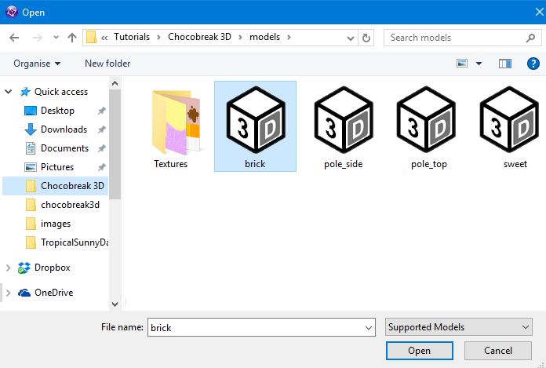 | ||
| For the bricks we will again be transposing them so the Transpose 2D to Transpose 2dx -> 3dx, 2dy -> 3dz. set the Position Y to 5, For this model the model isn't quite what we want - first lets see what we have. | ||
| 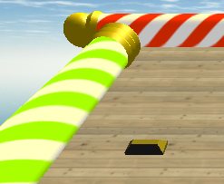 | ||
| Doesnt really scream Chunky Chocolate Bar to me, so lets make it a bit more chunky, set the Scale Y and the Scale Z to 2 leave the Scale X at 1, lets see what effect that has. | ||
| 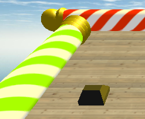 | ||
| Much better thats a nice chunky chocolate piece, so lets make a bar - ensure your first piece is placed on the 2D Frame at -108 and -45 then right mouse it and select Duplicate in the popup enter 6 Rows and 8 Columns | ||
| 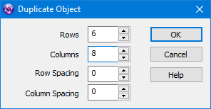 | ||
| This will create you a lovely big bar of chocolate firstly on the 2D Frame | ||
| 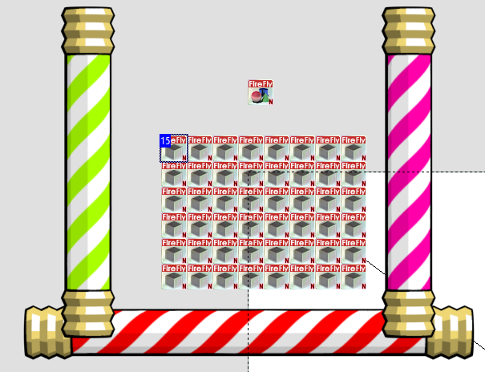 | ||
| And then again in the 3D World. | ||
| 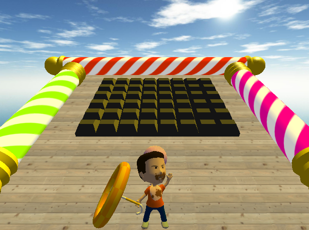 | ||
| Now we have the chunks of chocolate, we need to add collision to them, as we already know how to do the 2D collision it should be easy for you to do it but just incase i'll help you, create a New condition and click on the ball and select Collisions -> Another Object select the brick in the popup. | ||
| 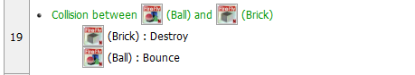 | ||
| On the Ball gridbox choose Movement -> Bounce and on the Brick line choose Destroy. you now have the base of 3d brick game lets add a few finishing touches such as 3 lives and some speed difficult, Insert a Firefly 2D Text object place it in the top corner, using the Font tab set it to Tahoma Bold 14. and change the starting text to Balls : 3 | ||
| 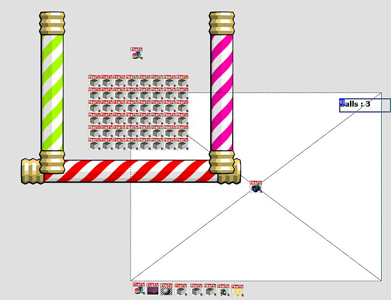 | ||
| At the start of Frame event right mouse the Animated Mesh and select Alterable Values -> Set change the value to Alterable Value B and set it to 3, we will manually deduct this during the lose part of game, but first we need to activate the Lose section. create a New Condition under the Playing section. | ||
| 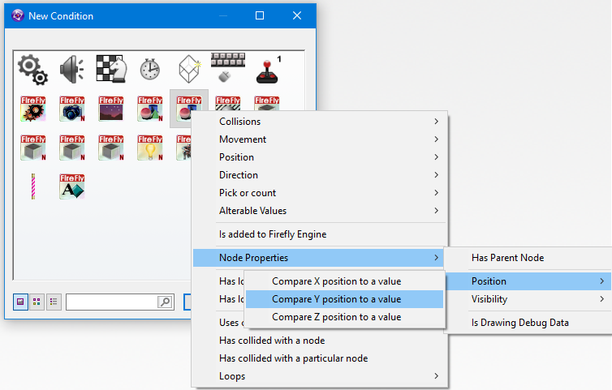 | ||
| Click the Ball Icon and select Node Properties -> Position -> Compare Y position to a value in the popup choose Lower or equal to -200 | ||
| 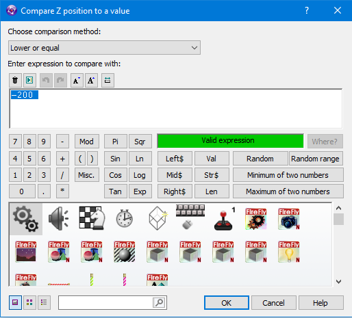 | ||
| On the grid square for ball click and select Set Position (might be called Select Position in some versions) change the X value to 0 and the Y value to -115 | ||
| 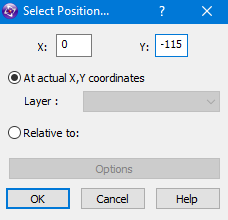 | ||
| Still on the ball grid square, click it again and select Direction -> Select direction just like before select the opposite arrows as our world is upside down. | ||
| 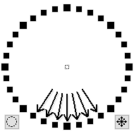 | ||
| Now click on the Animated Mesh line and select Alterable Values -> Subtract from in the popup change it to Alterable Value B and change the value to 1 | ||
| 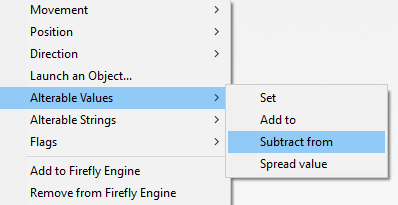 | ||
| Now click on the 2d Text gridsquare - click and select Set Text in the popup type "Balls: " + Str$( Alterable Value B( "Firefly Node - Animated Mesh" ) ) which will automatically change the text to how many balls you have left. | ||
| 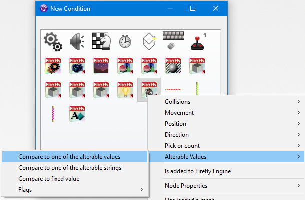 | ||
| Create a New Condition in the Playing section click on the Animated Mesh icon and select Alterable Values -> Compare to one of the alterable values in the popup select Alterable Value B and make sure its set to equals 0 | ||
| 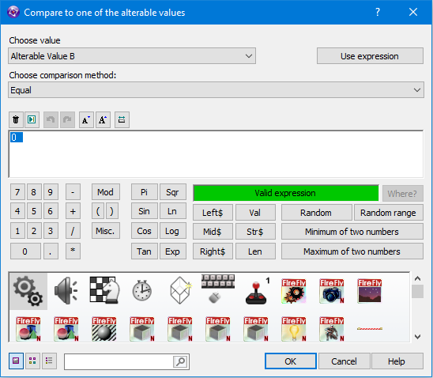 | ||
| now we have set up the lose condition, we need to enable the Lost events and disable the Playing events, hopefully you remember that you need to click the gridsquare under "Special Conditions" select Group of events -> Activate and the choose Lost in the popup, then do the same again but Deactivate Playing. | ||
| 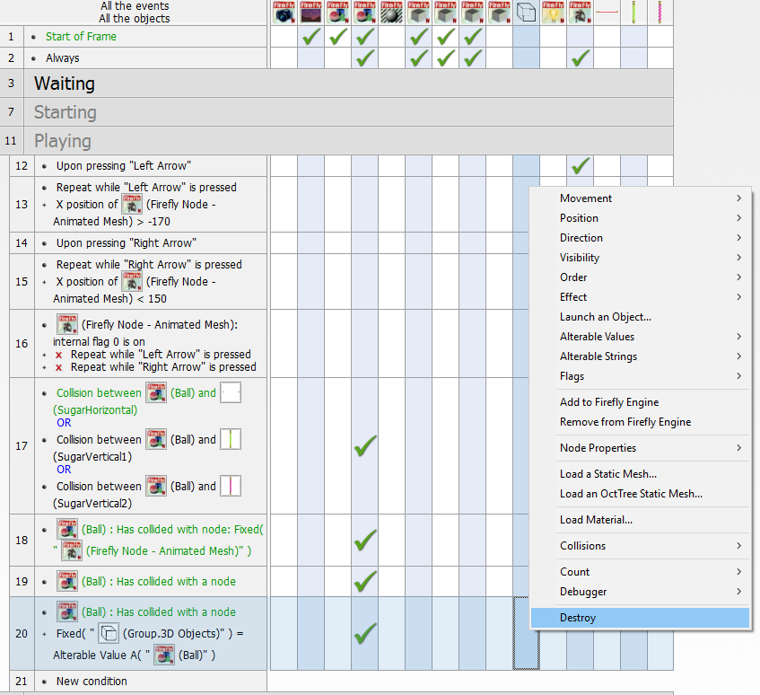 | ||
| Thats all the end of game conditions done, but i'll leave you to decide what happens next, | ||
{kind=link}